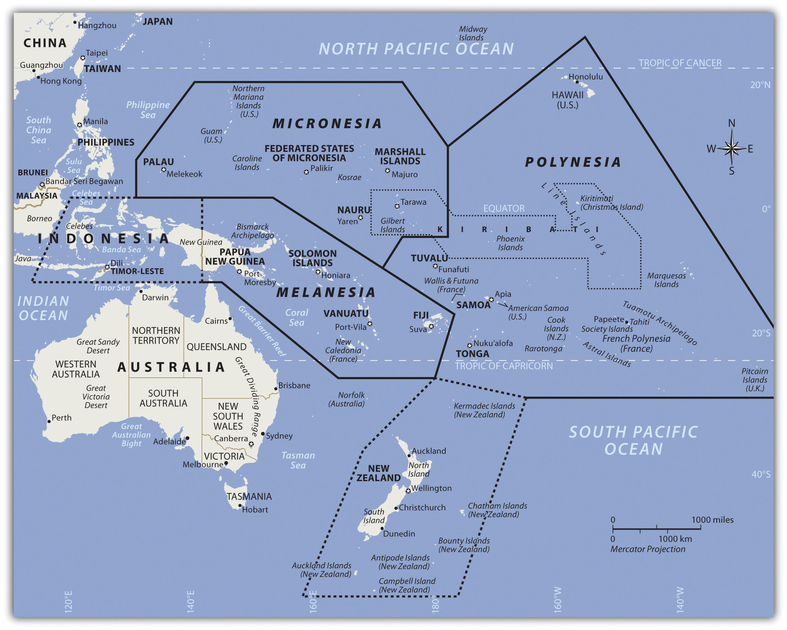
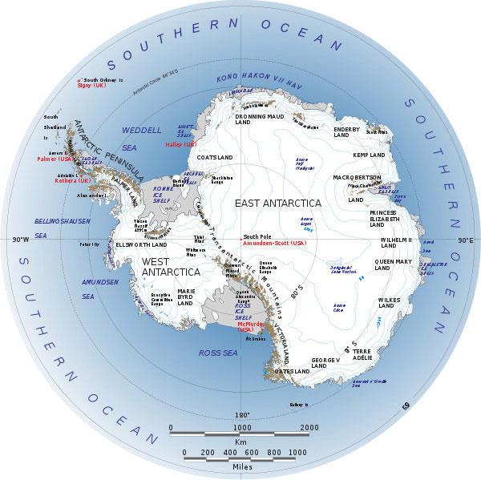
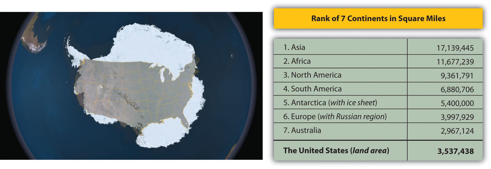
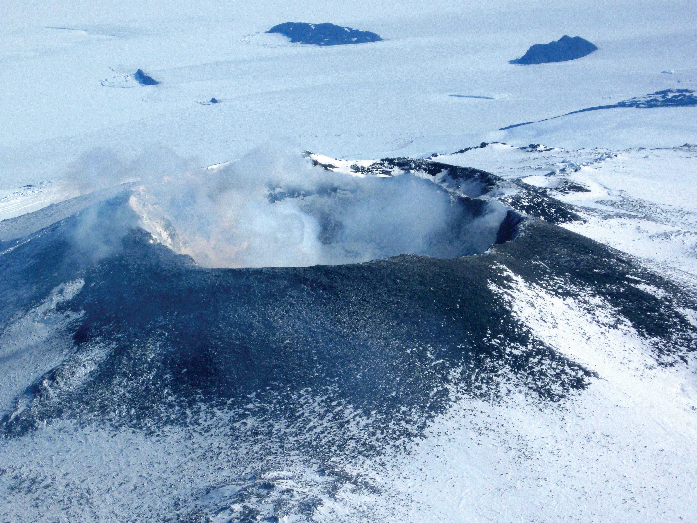
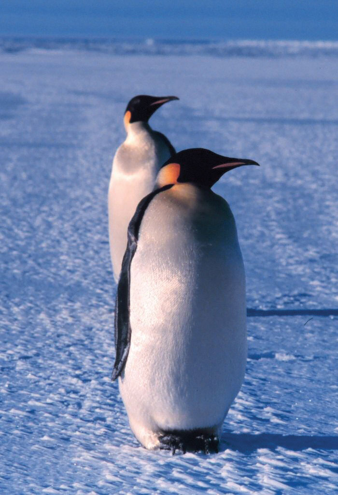
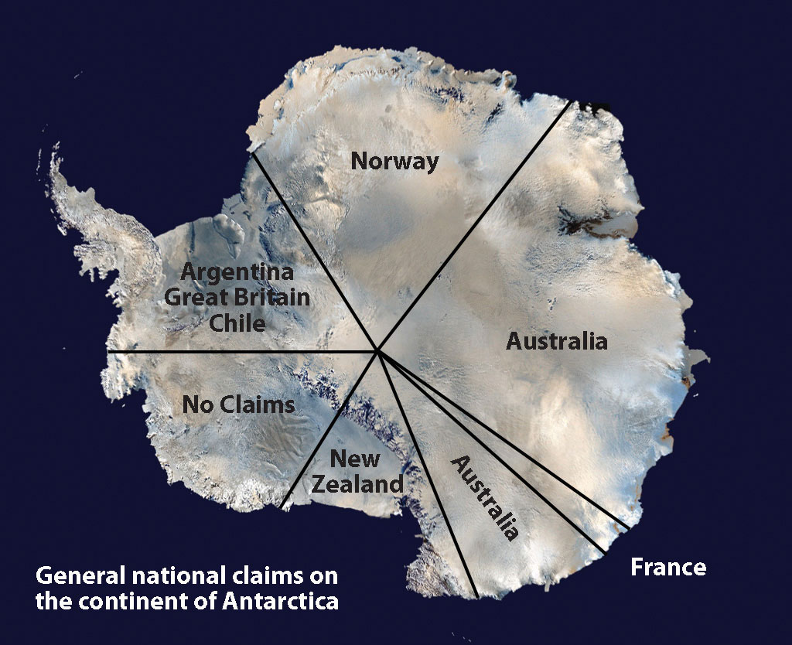
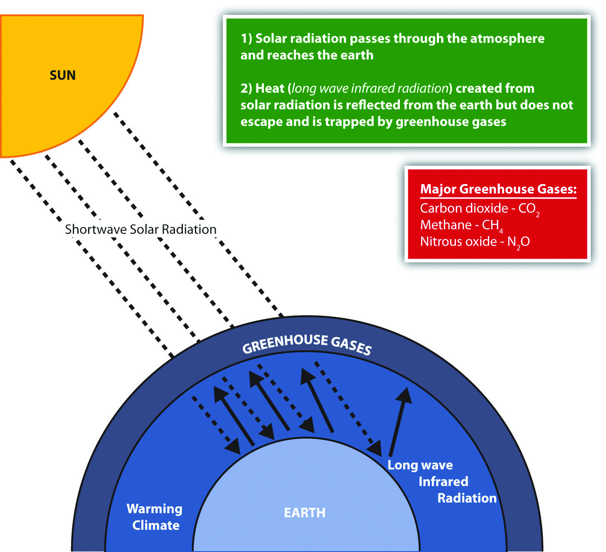
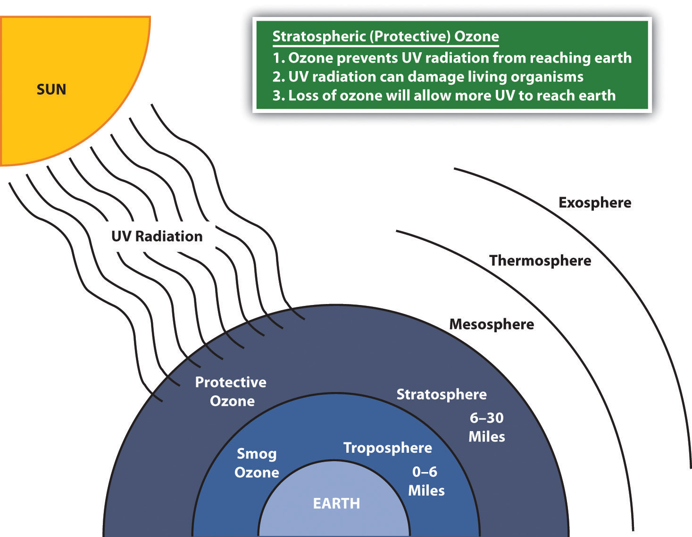
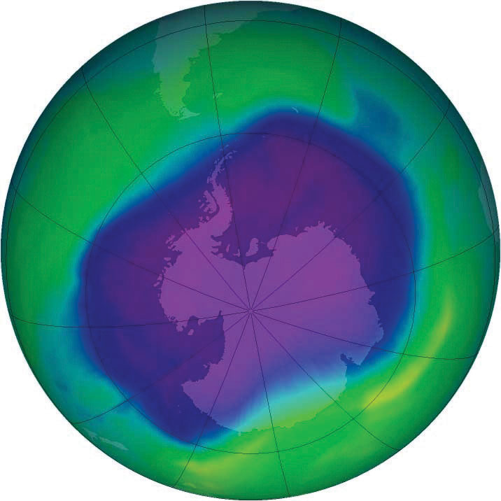
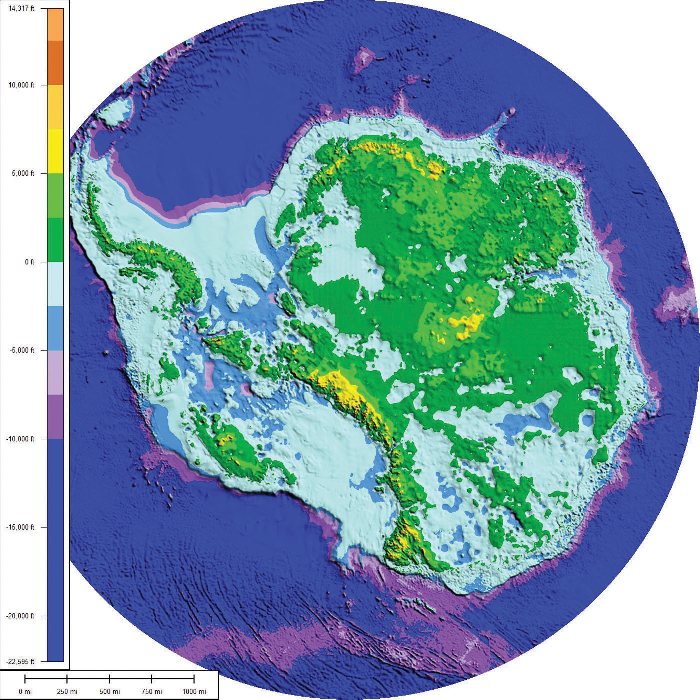

The immense tropical Pacific realm and the ice-covered continent of Antarctica have almost opposing physical characteristics, but they are similar in that they are remote and isolated from the rest of the world. Understanding the geographic qualities of these two realms will help in comprehending the unique traits that humans have developed to survive in diverse environments. Both places include large physical areas with vast open spaces between human settlements. In the Pacific, human settlements are on islands. The only human settlements in Antarctica are isolated research stations. Historically, the South Pacific required a water-based transportation network, and in Antarctica, humans traveled across the snow and ice exploring the earth’s southern extremes. Air travel is now available to connect both places with the rest of the world.
Almost all of Antarctica rests south of the Antarctic Circle. Antarctica is a continent surrounded by the Southern Ocean. The next nearest continent is South America. Many countries have laid claim to sections of Antarctica, but the continent remains off limits to industrial development and many other activities. The hundreds of islands of the South Pacific are surrounded by the Pacific Ocean and make up the largest geographic area in the world. The primary realm includes the island groups in the tropics between the Tropic of Cancer and the Tropic of Capricorn. There has been little industrial development in the South Pacific. Just as Antarctica has been divided up and claimed by other countries, though it was not colonized by them, most of the islands in the South Pacific were claimed or colonized by the imperial powers of Europe, Japan, or the United States. Both areas are considered to be peripheral realms in the overall scheme of the global economy. Tourism is the major activity in the South Pacific, and research and tourism are the major activities in Antarctica. Both areas have opportunities for greater economic development in the future. However, the difference is that Antarctica is not a country, and any benefit will go to the countries with claims on the continent or to the businesses taking tourists there.
Both the Pacific realm and Antarctica would be heavily impacted by increased climate change. Rising temperatures would continue to melt the ice in the polar caps, which in turn could raise sea levels. Changes in precipitation patterns could seriously alter the biodiversity of tropical islands in the Pacific, and changes in temperatures or precipitation could affect agricultural activity and tourism on many islands. Climate change in Antarctica could cause a further decline in the populations of penguins or other organisms.
Figure 13.1 The Tropical Realm of the South Pacific with the Three Main Regions of Islands
The Pacific realm is home to many islands and island groups. The largest island is New Guinea, which is home to most of the realm’s population. Many of the Pacific islands have become independent countries, while others remain under the auspices of their colonial controllers. The Pacific Theater of World War II was a battleground between the Japanese and American forces and had a large impact on the current conditions of many of the islands. The United States has been a major player in the post–World War II domination and control of various island groups. The Hawaiian Islands became the fiftieth US state in 1959.
The many islands can be divided into three main groups based on physical geography, local inhabitants, and location: Melanesia, Micronesia, and Polynesia. Indigenous cultural heritage remains strong in the South Pacific, but Western culture has made deep inroads into people’s lives. The globalization process bears heavily on the economic conditions that influence the cultural dynamics of the Pacific. Islands or island groups that remain under outside political jurisdiction are the most influenced by European or American cultural forces. Western trends in fast food, pop music, clothing styles, and social customs often dominate television, radio, and the cinema. Invasive Western cultural forces take the focus away from the traditional indigenous culture and heritage of the people who inhabited these isolated islands for centuries.
Traditionally, the islands were economically self-sufficient. Fishing and growing crops were the main economic activities, and nearby islands often established trade and exchanged natural resources. Fishing has been one of the most common ways of supporting the economy. There have been changes in the national boundaries to protect offshore fishing rights around each sovereign entity. Many waters have been overfished, consequently reducing the islands’ ability to provide food for their people or to gain national wealth. An increase in population and the introduction of modern technologies has brought about a dependency on the world’s core areas for economic support.
The Pacific is an extreme peripheral realm with little to offer to the core areas for economic exploitation. In recent decades, some national wealth has been gained from the mining of substances such as phosphates on a few of the islands. The main resources available are a pleasant climate, beautiful beaches, and tropical island terrain, all of which can be attractive to tourists and people from other places. Tourism is a growing sector of the service industry and a major means of gaining wealth for various island groups. To attract tourism, the islands must invest in the necessary infrastructure, such as airports, hotels, and supporting services. Long distances between islands and remote locations make tourism transportation expensive. Not every island has the funding to support these expenditures to draw tourists to their location.
The region of the Pacific north of Australia that borders Indonesia to the east is called Melanesia. The name originally referred to people with darker skin but does not adequately describe the region’s current ethnic diversity. The main island groups include Fiji, New Caledonia, Vanuatu, the Solomon Islands, and Papua New Guinea. All are independent countries except New Caledonia, which is under the French government. The island of New Guinea is shared between Papua New Guinea and Indonesia. Many islands on the eastern side of Indonesia share similar characteristics but are not generally included in the region of Melanesia.
Independent Countries of Melanesia
Other Island Groups
Figure 13.2 The Region of Melanesia

Papua New Guinea is the largest country in the Pacific realm and therefore the largest in Melanesia. It is diverse in both physical terrain and human geography. The high mountains of the interior reach 14,793 feet. Snow has been known to fall in the higher elevations even though they are located near the equator. Many local groups inhabit the island, and more than seven hundred separate languages are spoken, more than in any other country in the world. Indigenous traditions create strong centripetal forces. Many islands of Melanesia are recently independent of their European controllers; Papua New Guinea received independence in 1975 and is working toward fitting into the global community.
Papua New Guinea is a diverse country that still has many mysteries to be revealed in its little-explored interior. The country’s large physical area provides greater opportunities for the exploitation of natural resources for economic gain. The interior of the island has large areas that have not been exploited by large-scale development projects. In the past few decades, oil was discovered and makes up its largest export item. Gold, copper, silver, and other minerals are being extracted in extensive mining operations, often by outside multinational corporations. Subsistence agriculture is the main economic activity of most of the people. Coffee and cocoa are examples of agricultural exports.
A number of islands off Papua New Guinea’s eastern coast—including Bougainville—have valuable mineral deposits. Bougainville and the islands under its jurisdiction are physically a part of the Solomon Island archipelago but are politically an autonomous region of Papua New Guinea. Volcanic vents deep under the sea continue to bring hot magma and minerals to the surface of the ocean floor, creating valuable exploitable resources. Papua New Guinea has laid claim to these islands and the underwater resources within their maritime boundaries. Rebel movements have pushed for the independence of the Autonomous Region of Bougainville but have been unsuccessful. The islands remain under the government of Papua New Guinea.
To the east of the island of Guinea are the Solomon Islands, a group of more than one thousand islands. About eighty of them hold most of the population of more than a half a million. The island of Guadalcanal was the site of some of the fiercest fighting in World War II between Japan and the United States. Honiara, the capital city, is on Guadalcanal. The Solomon Islands were a colony of Great Britain but gained independence in 1978. Colonialism, World War II, and ethnic conflict on the islands created serious centrifugal cultural forces, divisions, and political tensions over the past few decades. In 2003, military and police troops from other islands and Australia intervened to restore order after ethnic tension erupted into civil unrest.
Figure 13.3 Malaitan Chief on the Solomon Islands

The heritage and history of these islands includes local cultures complete with isolated traditions and ethnic organization.
Source: Photo courtesy of Jim Lounsbury, http://en.wikipedia.org/wiki/File:Malaitan_Chief.jpg.
Shifting tectonic plates are the source of environmental problems. Active seismic activity has created earthquakes and tsunami conditions that have brought devastation to the region. An earthquake of 8.1 magnitude hit the Solomon Islands in 2007, bringing high waves and many aftershocks. The tsunami killed at least fifty-two people, and as many as one thousand homes were destroyed. The islands contain several active and dormant volcanoes. Tropical rain forests cover a number of the islands and are home to rare orchids and other organisms. There is concern that these resources might be harmed by deforestation and the exploitation of resources for economic gain.
Figure 13.4 Saint Joseph’s Bay on the Isles of Pines, New Caledonia

These remote islands have moderate climates and beautiful coastal settings. Many have been unduly romanticized by works of fiction. These islands are isolated and can lack resources; life can be more difficult than it is often portrayed.
Source: Photo courtesy of Bruno Menetrier, http://commons.wikimedia.org/wiki/File:Noum%C3%A9a_Ile_des_Pins_Saint_Joseph.JPG.
The country of Vanuatu was inhabited by a large number of South Pacific groups; as a result, many languages are spoken within a relatively small population. The French and the British both colonized the island archipelago. It was called the New Hebrides before independence in 1980, when the name was changed to Vanuatu. These small volcanic islands have an active volcano and have experienced earthquakes in recent years. One of Vanuatu’s means of bringing in business has been to establish offshore banking and financial services, similar to what is found in the Caribbean. Many shipping firms register their ships there because of the advantages of lower taxes and flexible labor laws.
New Caledonia is still a colony of France and was once a French prison colony. Under a current agreement, sovereignty is slowly being turned over to the local island government. Periodic reevaluations of the local government will be conducted to see if independence can be granted.
New Caledonia has historically relied on subsistence agriculture and fishing for its livelihood. About 25 percent of the world’s known nickel resources are located here. Nickel resources will substantially affect the economy, bring in foreign investments, and raise the standard of living.
Fiji is located in the eastern sector of Melanesia and has almost one million people. The country includes more than one hundred inhabitable islands, but two are home to most of the population. Colonialism heavily impacted the population’s ethnic makeup. During British colonial rule, thousands of workers from South Asia were brought in by the British to work on the sugar plantations. After a century of British rule, Fiji became independent in 1970. The people of South Asian descent remained in Fiji and now make up more than one-third of the population. Ethnic conflicts erupted on the political scene between the Melanesian majority and the South Asian minority. Political coups and coalition governments have attempted to work out political solutions with limited success. Fiji is quite well developed and has a substantial tourism industry that augments the other agricultural and mining activities.
North of the Solomon Islands and Papua New Guinea is the large region of Micronesia. The “micro” portion of the name refers to the fact that the islands are small in size—often only one square mile or so in physical area. The region has more than two thousand islands. Most of the islands are composed of coral and do not extend above sea level to any large extent. These low islandsIslands composed of coral that do not extend above sea level to any large extent. dominate the high islandsIslands usually of volcanic origin that can reach elevations in the thousands of feet.. The high islands are usually of volcanic origin and reach elevations in the thousands of feet.
The largest island in Micronesia is Guam. It is only 210 square miles in area and reaches an elevation of 1,335 feet at its highest point. Coral reefs surround Guam’s volcanic center. Guam is not an independent country but a US possession. The island was a strategic location during World War II, and the United States has major military installations located on the island.
Figure 13.5

Guam is a US possession. This photo shows the front of the University of Guam’s School of Nursing. The university has more than three thousand students and is accredited by the Western Association of Schools and Colleges in the United States.
Source: Photo courtesy of Guampedia Foundation, http://www.flickr.com/photos/guampedia/3992166430.
The Northern Mariana Islands are next to Guam and are current US possessions, along with Wake Island in the northeast. The US administers the United Nations Trust Territory of the Federated States of Micronesia. Implemented in 1986 and renewed again in 2004, the islands entered into the Compact of Free Association with the United States and established an independent status.
The independent island country of Nauru is only about eight square miles in physical area, but its large phosphate deposits created enormous wealth for its small population. Once the phosphates had been mined, however, there was little means to gain wealth on such a small island with a devastated landscape. Many on Nauru are trying to live off the investments from their mining wealth or have moved to find a livelihood elsewhere.
Independent Countries of Micronesia
Other Island Groups
Figure 13.6

The majority of islands in Micronesia are low islands composed of coral.
Palau, located in western Micronesia, has a population of about twenty thousand people and an area of about 177 square miles. Its early inhabitants included people from Asia and from the Pacific realm. British explorers arrived early on the island, but Spain dominated it during the colonial era. After losing the Spanish-American War, Spain sold the island to Germany, which implemented mining operations on the island. After its defeat in World War I, Germany lost the island to Japan. Japan used it as a strategic outpost but was defeated in World War II and had to give up all its external possessions. After 1945, Palau was held by the United States and the UN. In 1994, the island opted for independence and retained an agreement of free association with the United States. The United States has held strategic military installations on Palau and other islands in Micronesia. Palau’s economic and geopolitical dynamics are highly reflective of US activities in the region.
Marshall Islands, on the eastern side of Micronesia, experienced serious devastation from the conflict between Japan and the United States during World War II. The Marshall Islands became a testing ground for US nuclear weapons. Atomic bombs were tested on various atolls, rendering them uninhabitable. An atoll is a coral island that surrounds a lagoon. From 1946 to 1958, the United States conducted sixty-seven atmospheric nuclear tests in the Marshall Islands. The largest was known as the Bravo test, which included the detonation of a nuclear device over Bikini Atoll that was one thousand times more powerful than the atomic bomb dropped on Hiroshima during World War II. There are concerns about radioactive fallout that may still affect the people who inhabit nearby atolls. The Marshall Islands were granted independence in 1986 with an agreement with the United States to provide aid and protection in exchange for the use of US military bases on the islands.
The largest region of the Pacific is Polynesia, a land of many island groups with large distances between them. The root word poly means “many.” Numerous groups of islands have come together under separate political arrangements. The region includes the Hawaiian Islands in the north and the Pitcairn Islands and Easter Island to the east. New Zealand is now studied as a part of the Austral realm, but the Maori living there are originally from Polynesia. Polynesia has a mixture of island types ranging from the high mountains of Hawaii, which are more than 13,800 feet, to low-lying coral atolls that are only a few feet above sea level. Islands that have enough elevation to condense moisture from the clouds receive adequate precipitation, but many islands with low elevations have a shortage of fresh water, making habitation or human development difficult.
Polynesian culture stems from island resources. Fishing, farming, and an understanding of the seas created a way of life that gave Polynesia its identity. Polynesians created innovative maps that provided a means of sailing across large expanses of open seas to connect with distant islands. Their lifestyle revolved around natural resources and the creative use of natural materials. Polynesian art, music, and language reflect a diversity of cultural trends derived from a common heritage. The warm climate and beautiful islands contrast with violent destructive storms and a lack of fresh water or resources, which can make life difficult.
Figure 13.7

The region of Polynesia has island groups that are high islands with mountainous interiors.
Independent Countries of Polynesia
Main Island Possessions
French Polynesia (FR)
At the beginning of the twenty-first century, Polynesia only had four independent island groups: Kiribati, Samoa, Tonga, and Tuvalu. The rest of the many islands and island groups in Polynesia are claimed by or under the control or jurisdiction of other countries: mainly the United States, France, Great Britain, or New Zealand. Hawaii was a sovereign and independent kingdom from 1810 to 1893, when the monarchy was overthrown and the islands became a republic that was annexed as a US territory. Hawaii became the fiftieth US state in 1959. Hawaii’s development pattern is modern, based on tourism from the continental United States and the US military base on Pearl Harbor. According to the US Census, Hawaii had a population of 1.3 million in 2010. More than one-third of the people are of Asian descent, and at least 10 percent are native Hawaiians or Pacific Islanders. The United States has a number of additional possessions in Polynesia that include various small islands, atolls, or uninhabited reefs.
The Hawaiian Islands include more islands than the few usually listed in tourist brochures. Approximately 137 islands and atolls are in the Hawaiian chain, which extends about 1,500 miles. Hawaii is one of the most remote island groups in the Pacific. The islands of the Hawaiian archipelago are a product of volcanic activity from an undersea magma source called a hotspot, which remains stationary as the tectonic plate over it continues to shift creating new volcanoes. Mt. Kilauea, an active volcano on Hawaii, the largest island in the Hawaiian chain, is considered by geologists to be one of the most active volcanoes in the world. The active volcano of Mauna Loa and two dormant volcanoes, Mauna Kea and Hualālai, are on the same island. Mauna Kea is Hawaii’s tallest mountain at 13,796 feet above sea level, which is taller than Mt. Everest if measured from its base on the ocean floor.
Hawaii, like most islands of the Pacific realm, has a tropical type A climate, but snow can be found on the tops of its highest mountains during the winter months. The island of Kauai receives more than 460 inches of rain per year and is one of the wettest places on Earth. The rain shadow effect created by Mt. Wai’ale’ale is the reason for the high level of precipitation. All the rain falls on the windward side of the mountain, creating a rain shadow on the leeward side of the mountain, which is a semidesert.
Kiribati includes three sets of islands located in both Micronesia and Polynesia. The main component of Kiribati is the Gilbert Island chain in Micronesia, where the capital city and most of the population are located. The other two minor island chains are the Phoenix Islands and the Line Islands in Polynesia. Both island chains were US possessions before being annexed with the Gilbert Islands to become Kiribati. The Line Islands were used for testing of British hydrogen bombs starting in 1957. Three atmospheric nuclear tests were conducted by the British on Malden Island, and six were conducted on Christmas Island. There is concern about how radiation affected people present during the tests and thereafter. The Phoenix Islands have few inhabitants. In 2008, Kiribati declared the entire island group a protected environmental area, which made it the largest protected marine habitat in the world. Kiribati is the only country with land in all four hemispheres: north and south of the equator and on both sides of the 180° meridian.
After the colonial era, Samoa was divided into Western Samoa and Eastern Samoa. The United States controlled the eastern islands, which are referred to as American Samoa. Before World War I, Germany gained control of the larger, more extensive western islands only to lose them to New Zealand after the war. Western Samoa was under the New Zealand government until 1962, when it gained independence. The name was officially changed from Western Samoa to Samoa in 1997.
The Samoan Islands are volcanic, and the most active volcano last erupted in 1906. In Samoa, three-quarters of the nearly two hundred thousand people live on the larger of the two main islands. Colonialism has had a major impact on the culture, especially in the case of religion. Christianity became widespread once it was introduced and is now the religion of about 99 percent of the population. American music and societal trends are also a major influence on the islands because of migration between Hawaii and the US mainland. Many Samoans have moved to the United States and established communities. Cultural traditions have been preserved and are often integrated into modern society. Samoa has some of the oldest history and traditions of Polynesia. For many years, the United States has held an extensive naval station in the bay of Pago Pago on American Samoa. During World War II, there were more US military personnel on the islands than Samoans. American Samoa became a key military post for the United States. American Samoa remains a US possession; however, Samoans are not US citizens unless one of their parents is a US citizen.
South of Samoa is an archipelago that is home to the Kingdom of Tonga. Only about 36 of the 169 islands are inhabited by a total population of about one hundred twenty thousand people. Tonga is ruled by a monarchy that never lost its governance powers throughout the colonial era. Tonga is the only monarchy in the Pacific. The two main methods of gaining wealth are by remittances from citizens working abroad and tourism.
The island nation of Tuvalu comprises four reef islands and five atolls for a total land area of about ten square miles. In 2008, it had a population of about twelve thousand people. These statistics indicate that Tuvalu is one of the four smallest countries in the world. Nauru is only about eight square miles in area. Only the Vatican and Monaco are smaller. The low elevation of the islands of Tuvalu make them susceptible to damage from rising sea levels. The highest point is only fifteen feet in elevation. Any increase in ocean levels as a result of climate change could threaten the existence of this country.
The South Pacific is home to many islands and island groups that are not independent countries. The biggest and most significant group in the southern region is French Polynesia. France colonized a large number of islands in the South Pacific and has continued to hold them in its control or possession as external departments or colonies. In western Polynesia, the French maintain control over the islands of Wallis and Futuna. French Polynesia consists of four main island groups: the Society Islands, the Austral Islands, the Tuamotu Islands, and the Marquesas. There are around 130 islands in French Polynesia, and many are too small or lack resources to be inhabited.
Figure 13.8 The Moorea Ferry in Papeete Harbor, Tahiti

The only ways to get to the islands are by aircraft or by ship. Transportation costs can be high for imported goods or for tourism development.
Source: Photo courtesy of Evil Monkey, http://commons.wikimedia.org/wiki/File:Moorea_Ferry_in_Papeete_harbour.JPG.
Tahiti, located in the Society Islands, is the central hub of French Polynesia. Papeete is the capital and main city with a population of almost thirty thousand. Tahiti is a major tourist destination with a mild climate that stays at 75 °F to 85 °F year-round and receives adequate rainfall to sustain tropical forests. Most of the people live along the coastal areas; the interior is almost uninhabited. The Society Islands include the island of Bora Bora, which is considered by many to be a tropical paradise and one of the most exotic tourist destinations in the world.
Figure 13.9 Bora Bora in the Society Islands in French Polynesia with Mount Otemanu in the Background

Bora Bora is a world-class tourist destination catering to the international traveler.
Source: Photo courtesy of tensaibuta, http://www.flickr.com/photos/97657657@N00/2092792187.
The volcanic Marquesas Islands to the northeast are the second-most remote islands in the world after the Hawaiian Islands. The weather pattern in the Pacific does not bring enormous amounts of precipitation to the Marquesas, a reality that restricts human expansion in the archipelago. The higher elevations in the mountains—the highest is 4,035 feet—draw some precipitation from the rain shadow effect, giving rise to lush rain forests on portions of the islands. With less than ten thousand people, the Marquesas do not have a large population to support and rely on financial support from outside to sustain them. French painter Paul Gauguin is buried there, and the islands are remembered as his home during the last years of his life.
The Austral Islands are the southernmost group of islands in French Polynesia and are home to only about 6,500 people. French Polynesia also includes the Tuamotu Archipelago, between the Society Islands and the Marquesas, which comprises about 75 atolls and an uncounted number of coral reefs that extend for about nine hundred miles. The islands have a population of fewer than twenty thousand people, and the main economic activity is the cultivation of black pearls and coconuts.
The French government used islands in the Tuamotu Archipelago as test sites for nuclear weapons. From 1966 to 1974, the French tested 41 atomic devices above ground in the atmosphere, and from 1974 to 1996, they tested 137 atomic devices below ground. Radiation concerns are the same here as they are on the Marshall Islands, where the United States tested atomic weapons. Scientific testing monitored by the World Health Organization has determined the humans living closest to the atolls are not presently in danger of radioactive materials either in the environment or in their food supply. The long-term effects of the underground tests continue to be monitored.
To the east of French Polynesia are the four Pitcairn Islands, controlled by Great Britain. The main island, Pitcairn, is the only inhabited island in this chain and is one of the least inhabited islands in the world; the total population is fewer than fifty people. Mutineers from the HMS Bounty escaped to Pitcairn in 1790 after taking various Tahitians with them.
Even farther east than Pitcairn, on the edge of Polynesia, is Easter Island. Now under the government of Chile, Easter Island was historically inhabited by Polynesians who built large stone heads that remain somewhat of a mystery. At the center of Polynesia are the fifteen small Cook Islands, which are controlled by New Zealand and are home to about twenty thousand people, many of whom claim Maori ethnicity.
Identify the following key places on a map:
Figure 13.10 The Southern Ocean and Antarctica
Source: Image used by permission of the British Antarctic Survey, http://www.photo.antarctica.ac.uk.
The Southern Ocean, which surrounds the continent of Antarctica, is often misunderstood or not included on many maps of the Southern Hemisphere. The cold waters off the coast of Antarctica move from west to east in a clockwise rotation around the continent in a movement called the West Wind Drift, or the Antarctic Circumpolar Current. The Southern Ocean’s northern boundary does not border a land mass but meets up with the Atlantic, Pacific, and Indian Oceans. Most geographers accept the northern boundary of the Southern Ocean to be located south of 60° latitude even though the actual limit has not yet been firmly agreed upon.
The Southern Ocean’s northern boundary has more to do with the marine conditions of the realm. There is a transition called the Subtropical ConvergenceWhere the cold, dense waters of the Southern Ocean meet up with the warmer waters of the other oceans. in which the cold, dense waters of the Southern Ocean meet up with the warmer waters of the Pacific, Atlantic, and Indian Oceans. The cold, dense water from the south sinks below the warm waters from the north to create a zone of upwelling and mixing that is conducive to high levels of productivity for organisms such as phytoplankton and krill. The zone of Subtropical Convergence can be visually observed by the grayish, cold southern waters meeting up with the bluish-green, warm northern waters. The krill, which thrive on phytoplankton, are an important link in the food chain for marine organism such as fish, penguins, seals, albatrosses, and whales in the Southern Ocean.
The world has seven focal continents. Rated by physical area from the largest to the smallest, they are Asia, Africa, North America, South America, Antarctica, Australia, and Europe. Antarctica, which is larger than Australia and 1.3 times larger than Europe, is located entirely south of 60° latitude and is surrounded by the Southern Ocean. Antarctica has the highest average elevation of any continent; there are many mountain ranges. The two-thousand-mile-long Transantarctic Mountain range divides Antarctica into a small western region and a larger eastern region. At both ends of the Transantarctic Mountains are the two main ice shelves: the Ross Ice Shelf and the Ronne Ice Shelf. The Ellsworth Mountains are located in the western region and are home to Mt. Vinson (or the Vinson Massif), which is the highest peak on the continent, reaching an elevation of 16,050 feet. This is higher than any mountain in the contiguous, continental United States, Europe, or Australia.
Figure 13.11 Size Comparison of Antarctica and the United States
Antarctica without the ice sheet would be considerably smaller; some estimate it would be only about one hundred thousand square miles in land area, or the equivalent of the physical area of the US state of Colorado.
Source: Image courtesy of NASA’s Landsat Image Mosaic of Antarctica (LIMA), http://lima.nasa.gov/antarctica.
The Antarctic Peninsula is actually an extension of the Andes Mountains of South America and is home to active volcanoes. The peninsula is the location of a volcano on Deception Island that erupted in the late 1960s and destroyed research stations in the area. There was an additional large eruption in 1970. The volcano continues to show activity, and sightings of lava flow continue to be reported. There may be more volcanic activity than what has been recorded. An underwater volcano in the Antarctic Peninsula was discovered in 2004. Mt. Erebus (12,448 feet), located on Ross Island on the other side of Antarctica from the Antarctic Peninsula, is the world’s southernmost active volcano. Mt. Erebus has been active since 1972 and has a large lava lake in its inner crater.
About 98 percent of Antarctica is covered by an ice sheet that is, on average, up to a mile deep. In some areas, it is nearly three miles deep. In the winter season, the ice sheet’s area might double as it extends out from the coastline. The Antarctic ice sheet holds about 70 percent of the earth’s fresh water. If the ice sheet were to melt, the sea level could rise considerably and cover many of the earth’s low-lying islands, peninsulas, and coastal regions with low elevations. Antarctica is considered a desert because it usually averages fewer than ten inches of precipitation per year. Coastal regions annually receive as much as four feet of snow, while the interior near the South Pole might only receive a few inches.
Figure 13.12
Mt. Erebus (12,448 feet), located on Ross Island, is Antarctica’s most active volcano and has a lava lake in its inner crater.
Source: Photo courtesy of Nick Powell (National Science Foundation), http://commons.wikimedia.org/wiki/File:Mount_Erebus_in_2009.JPG.
There are areas in Antarctica that are not covered with ice but have a landscape of bare ground. This nonice portion of the continent protrudes above the ice sheet and only covers a combined physical area equivalent to about half the US state of Kentucky. The only plant life that exists here are the many different mosses and lichens that grow during short periods of the year. Below the giant ice sheet are dozens of subglacial lakes. Lake Vostok, the largest lake discovered in the Antarctic so far, was found two miles below the ice sheet and is the size of Lake Ontario. It is unknown what aquatic life might exist in these lakes. If all the ice and snow were removed from the continent, the total land area would be considerably smaller and would consist mainly of mountain ranges and islands. Some estimate that this land area altogether would only equate to about one hundred thousand square miles, roughly equivalent to the physical area of the US state of Colorado. This does not account for the fact that if all the ice were to melt, the sea level would rise and cover more land area. The land portion of the continent would also expand upward because of the loss of the weight of the ice, which has been compressing the continent.
Not only is Antarctica the driest continent with the least average annual precipitation and the highest continent in average elevation; it is also the coldest of the continents. The lowest temperature ever recorded on Earth was −128 °F in 1983 at a Russian research station in Antarctica. Temperatures reach a minimum of less than −110 °F in winter in the interior and greater than 55 °F near the coast in summer. No permanent human settlements exist in Antarctica other than research stations from a number of countries.
The continent is not politically controlled by any one government. Early seafaring explorers sailed in these waters, and various countries laid claim to sections of the continent. The continent was first sighted by explorers in 1820, and the South Pole was first reached in 1911. Land claims to the continent were established by the home countries of early explorers. Forty-six countries are now included in the Antarctic Treaty, which was originally signed by twelve countries in 1959. The treaty, designed to protect the environment and encourage scientific research, prohibits military activities, mineral mining, and the disposal of waste products. All land claims were suspended when the Antarctic Treaty was initiated, but the claims are not without political ramifications. Antarctica is divided into pie-shaped sections, and each of the original claimant countries is allocated a portion, according to their claim. The countries with original claims are Norway, New Zealand, France, Chile, Australia, and Argentina. Other countries, including Brazil, Peru, Russia, South Africa, Spain, and the United States, have reserved their right to submit claims on the continent in the future if the issue of territorial claims becomes significant. A large sector of West Antarctica called Marie Byrd Land remains unclaimed.
Research stations account for the entire human population in Antarctica. Approximately one thousand people live in Antarctica year-round, and up to five thousand or more live there during the summer months. Many of the research stations rotate their personnel, and tours of duty last anywhere from a few months to a year or more. Various family groups have worked there as well as other service workers, including Russian Orthodox priests, who have rotated every year at one of the Russian research stations.
Figure 13.13 Emperor Penguins, Ross Sea, Antarctica
Source: Photo courtesy of Michael Van Woert (NOAA), http://commons.wikimedia.org/wiki/File:Emperor_penguin.jpg.
Tourism brings the largest number of additional people to the continent. Tourists come for short-term visits to experience the conditions or see the many species of penguins or fauna that exist here. More than forty-five thousand tourists visit the Antarctic Treaty area yearly. Most arrive on commercial ships that specialize in tours of the region. Tours only last one or two weeks.
Figure 13.14 Antarctic Territorial Claims
Source: Satellite image courtesy of NASA, http://www.nasa.gov/audience/forstudents/5-8/features/what-is-antarctica-58.html.
Research has revealed that mineral resources are to be found under the ice in Antarctica, and oil and natural gas are found in offshore deposits. Antarctica is a frontier for economic development that is not under the jurisdiction of any one government. The Antarctic Treaty has been the determinant of the level of human activity. The current treaty restricts any extractive activity. Fishing is also regulated within the treaty, but without enforcement procedures, there have been questions about its effectiveness. Whaling was once a major industry in this realm. Whaling stations were established on the Antarctic Peninsula and nearby South Georgia Island. However, the increased use and extraction of petroleum reduced the need for whale oil and the industry collapsed. Some whaling continues in the waters of the Southern Ocean, which has led to questions about how to manage these natural resources. In 1998, negotiations between interested countries met in Madrid, Spain, and created the Protocol on Environmental Protection to the Antarctic Treaty (known as the Madrid ProtocolAnother name for the Protocol on Environmental Protection to the Antarctic Treaty.). The protocol designates Antarctica as a natural reserve that can only be used for peaceful purposes and for science. All mining or economic activity is banned.
Figure 13.15 The Greenhouse Effect and Climate Change
Climactic conditions on Earth have varied widely during the planet’s history. There have been long periods of heating or cooling. The last ice age, which ended about ten thousand years ago, created large ice sheets that covered much of the Northern Hemisphere. The earth then entered into the current interglacial period with warmer temperatures that melted the ice sheets; the polar regions have the last remaining ice on the planet. The earth has experienced large fluctuations in its temperature at various times in its past. Natural changes in the conditions that affect climate can include but are not limited to the dynamics of the sun, changes in the earth’s orbit, and volcanic eruptions.
Human activity has impacted conditions both locally and globally. Since the Industrial Revolution, humans have been pumping enormous amounts of carbon dioxide into the atmosphere, which affects the planet’s climate and temperature. The Industrial Revolution introduced the burning of coal as a fuel to boil water to operate steam engines. This allowed power to become more versatile and mobile. The introduction of the automobile increased the burning of petroleum, which released carbon dioxide into the atmosphere in the form of engine exhaust.
Large-scale deforestation and the burning of fossil fuels have increased the quantity of heat-trapping “greenhouse gases” in the atmosphere. Nitrous oxide, methane, carbon dioxide, and similar gases act like the glass panels of a greenhouse that allow short-wave radiation from the sun to enter but do not allow the long-wave radiation of heat to escape into space. Deforestation reduces the number of trees that use carbon dioxide and store carbon in plant fibers. The burning of wood or carbon-based energy sources such as oil or coal releases the carbon back into the atmosphere. Fossil fuels are created when dead plant and animal life have been under pressure and decay for long periods and have retained their carbon component. This all leads to a rise in the activity of the carbon cycle. Carbon is a key component to the regulation of the earth’s temperature. Life on Earth is dependent on temperature conditions that are regulated by the atmosphere. This natural cycle has been augmented by human activity.
Changing global temperatures are one aspect of climate change that has received attention in recent years. Technically speaking, global warming is an average increase in the temperature of the atmosphere near the earth’s surface. Few environmental effects could impact Antarctica as much as the phenomenon of changing temperatures. There would be major ramifications for the entire world if temperatures would increase to the extent that the Antarctic ice sheet would melt and dissolve away. Sea levels would rise, and many areas of the planet with large urban populations would be flooded. For instance, many of the largest urban centers in the world are port cities that rely on the import and export of goods and materials. These cities would be in danger of being under water if the sea level were to rise even a few feet, let alone up to two hundred feet (approximated to be equivalent to the volume of water in the polar ice caps). It should be noted that light-colored surfaces such as snow and ice reflect more radiation than do darker surfaces. If the Antarctic ice sheet were to melt, this would certainly exacerbate global climate change, as more radiation would be absorbed at the surface (land and water). Climate change might also affect agricultural production. Global changes in temperature would alter ecosystems and the habitats of organisms, changing the balance of nature in many biomes.
The scientific community continues to study the dynamics of climate change. In the last decade, some of the warmest annual temperatures in the past century have been documented. Data gathered from both the National Oceanic and Atmospheric Administration (NOAA) and the National Aeronautics and Space Administration (NASA) indicate that the earth’s surface temperatures have increased by more than one degree in the past one hundred years.
Climate change can have a major impact on atmospheric conditions. It should be noted that good ozone depletion in the stratosphereSecond layer of the earth’s atmosphere that extends approximately six to thirty miles above the earth. (the second layer of the earth’s atmosphere) has different causes and conditions than temperature change in the troposphereLayer of the earth’s atmosphere that extends from the surface of the earth to approximately six miles above the earth. (the layer just above the earth’s surface). The two concepts have separate and distinct dynamics that are not directly related. Ozone (O3) is a simple molecule consisting of three oxygen atoms. Common oxygen gas molecules have two oxygen atoms (O2). Depending on where ozone is located in the atmosphere, it can be either a protective safeguard from ultraviolet (UV) radiation from the sun or an element in smog that causes health problems. Good ozone in the stratosphere provides a protective shield preventing harmful UV radiation from reaching the earth. UV rays from the sun are known to cause skin cancers, eye damage, and harm to organisms such as plankton. Bad ozone molecules in the troposphere mix with various chemicals to create smog, which reduces visibility and can cause respiratory health problems. Tropospheric smog might contribute to climate change but does not serve the same function as ozone molecules in the stratosphere. The depletion of good ozone in the stratosphere is a different chemical process than the creation of bad ozone in the troposphere.
Ozone in the stratosphere is vital to the protection of living organisms from damaging UV radiation from the sun. In the stratosphere, UV radiation is absorbed in a continuous cycle in which oxygen molecules are turned into ozone molecules and then back into oxygen molecules. Oxygen molecules (O2) absorb UV radiation in the stratosphere and separate into two oxygen atoms (O2 → 2 O). Each of these oxygen atoms (O) will attach to another oxygen molecule to create an ozone molecule (O + O2 → O3). Each ozone molecule (O3) will absorb UV radiation, which separates it back into an oxygen molecule and an atomic oxygen atom (O3 → O2 + O). The separate oxygen (O) atom will attach to another separate oxygen atom (O) to become an oxygen molecule (O2) again (O + O → O2). This cycle will continue to absorb UV radiation and keep UV radiation from reaching the earth’s surface. It is a chemical reaction that gives off heat and increases the stratosphere’s temperature.
Chemicals such as chlorine and bromine interact with protective ozone molecules in the stratosphere and break them down in a chain reaction that depletes the stratosphere of ozone molecules and stops the cycle that absorbs the UV radiation. One chlorine molecule can destroy one hundred thousand ozone molecules, and bromine atoms can destroy ozone molecules at a rate of many times that of chlorine. Chlorine and bromine enter the stratosphere through the discharge of chlorofluorocarbons (CFCs), hydrochlorofluorocarbons (HCFCs), and other chemicals that deplete ozone molecules. These chemicals have been mainly used in industrial processes such as refrigeration and air conditioning and in solvents and insulation foam. In the stratosphere, radiation from the sun breaks HCFCs and CFCs apart, releasing chlorine atoms that destroy ozone molecules.
Figure 13.16
Ozone in the stratosphere protects the earth from harmful ultraviolet radiation from the sun.
Figure 13.17
One of the largest ozone holes was observed in 2006 over Antarctica.
Source: Photo courtesy of NASA, http://commons.wikimedia.org/wiki/File:160658main2_OZONE_large_350.png.
This process also occurs naturally when volcanoes erupt and emit sulfur aerosols into the atmosphere. The sulfur aerosols break down CFCs and halon; this results in the release of chlorine and bromine, which deplete ozone molecules. In recent years, nitrous oxide has become a major chemical that can reach the stratosphere to act as an agent in the ozone depletion process. Nitrous oxide can be released into the atmosphere from human activities such as the use of nitrogen fertilizers in agriculture or from vehicle exhaust from burning fossil fuels. Nitrous oxide is also released naturally from the soil or from ocean water.
Ozone depletion has been especially noticeable over Antarctica. A large area of ozone depletion in the upper atmosphere is often called an ozone holeA major reduction in the amount of ozone found in a specific area of the stratosphere.. The ozone hole over Antarctica is not exactly a total depletion of ozone but a major reduction in the amount of ozone found in the stratosphere over the South Pole. Recent ozone levels in the stratosphere over Antarctica have decreased and are lower than they were in 1975. Polar stratospheric clouds, which sometimes develop over Antarctica during the extremely cold winter months, severely reduce ozone levels. The clouds trap chlorine and nitric acid in their ice crystals. As the circulation of westerly winds starts in the spring, an atmospheric vortex is created over the polar area. The ozone hole increases during the spring when sunlight increases—from September to early December. The sunlight speeds up the chemical reactions that deplete the ozone molecules. During this time, as much as half of the lower stratospheric ozone can be destroyed, creating an ozone hole.
Many governments around the world have established agencies to address environmental issues and have invested resources in continued research and scientific discovery. Many nongovernmental agencies and organizations such as Greenpeace International have also been established to address the development or management of Antarctica and to address environmental concerns. International organizations such as the United Nations Environment Programme (UNEP) have been formed to enhance cooperation between countries and concerned entities. In 1998, the Intergovernmental Panel on Climate Change (IPCC) was established by the UNEP and the World Meteorological Organization to address the work of the United Nations Framework Convention on Climate Change (UNFCCC). Through an international treaty, the agency focuses on the harmful effects of climate change. One outcome of the UNFCCC’s work was the Kyoto ProtocolAn international environmental treaty with the goal of achieving stabilization of greenhouse gas concentrations in the atmosphere at a level that would prevent dangerous anthropogenic interference with the climate system. developed in 1997 in Kyoto, Japan, which created a legal commitment by participants to reduce greenhouse gases and address climate change issues. As of 2010, 191 countries have signed on to the initiative. The United States has not yet ratified the protocol. Enforcing the Kyoto Protocol is a matter of debate. The 2009 United Nations Climate Change Conference (also referred to as the Copenhagen Summit) was held in Denmark to address some of the same issues that were discussed in the Kyoto Protocol.
Figure 13.18 One Projection of the Subglacial Topography of Antarctica below the Ice Sheet
This is what Antarctica might look like if all the ice were removed. The physical area remaining is estimated by some to be about one hundred thousand square miles, which is about the same physical area as the US state of Colorado. It is unclear what the actual physical area would be if the ice melted.
Source: Photo courtesy of Cristellaria, http://commons.wikimedia.org/wiki/File:AntarcticBedrock.jpg.
Depletion of the stratospheric ozone over the polar regions or the thinning of the ozone layer over the midlatitudes would have worldwide implications for human activity and environmental conditions. Climate change is not restricted to one country or one government; these and other environmental issues affect the whole planet and impact everyone, whether they are contributing to the problem or not. If the sea level were to rise to the level predicted because of global warming, it would affect every country with a coastline in the world. It would not be restricted to any one category of country, developed or undeveloped. Issues of increased UV radiation or climate change are not restricted by political boundaries or economic conditions; they require global thinking and awareness and cannot be solved by one country alone—if they can be solved at all.
Identify the following key places on a map: